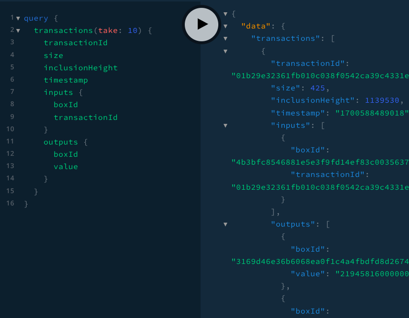

|
Sepehr Ganji I'm a Computer Science master student at NetMedia.sys at University of Calgary. I've contributed to GSoC 2025, have been an Intern at TELUS, and Software Engineer at Ergo Platform. |

|
ProjectsI'm interested in everything related to computers and electronics. I love trying new things and learning! |
|

|
Ergo GraphQL: Ergo Platform GraphQL server
Source Code / Live Demo
By leveraging the current explorer database, we developed a GraphQL server that provides a flexible and efficient way to query blockchain data.
|